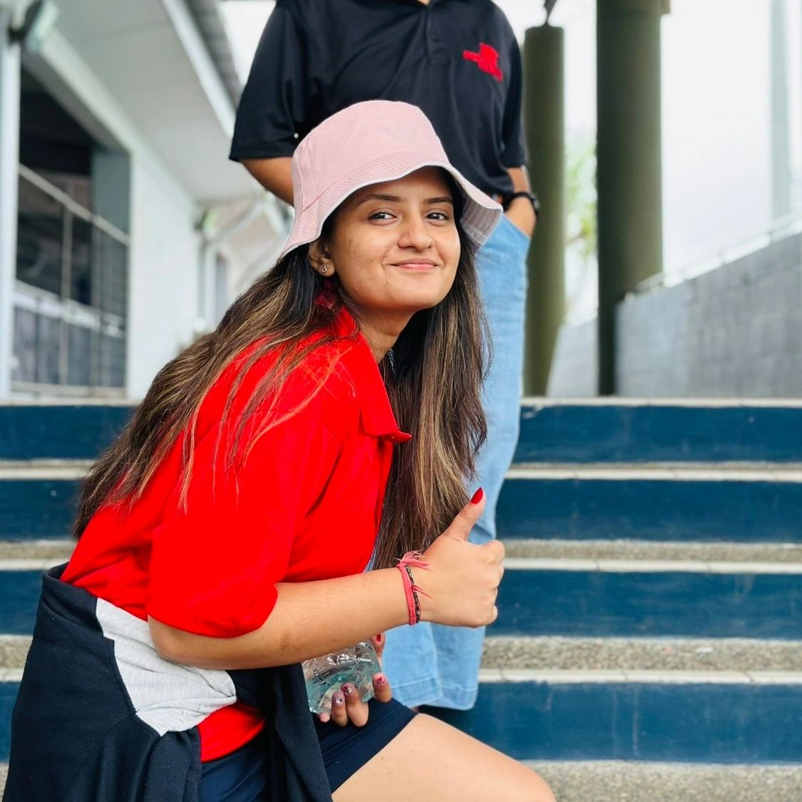

◈
Education
Bachelor of Networking and Security, University of the South Pacific (USP). Final year, 2026.
Networking & Cybersecurity · Ba, Fiji
Hi, I'm Raashi Mayur Kumar Kapadia, from Ba, Fiji — a final-year Bachelor of Networking and Security student at the University of the South Pacific. I enjoy solving technical challenges, strengthening system security, and turning ideas into practical solutions.

My studies and hands-on projects have helped me develop a foundation in networking, information security, troubleshooting, application development and teamwork.
Bachelor of Networking and Security, University of the South Pacific (USP). Final year, 2026.
IT support internship experience, complemented by security-focused university project work.
Working toward a career as a cybersecurity analyst or network security engineer.
I am interested in protecting information and building systems that are reliable, usable and secure. I enjoy understanding how networks and applications work together.
I aim to continue learning through hands-on work, professional certifications and collaboration with experienced technology teams.
Beyond networking and cybersecurity, I enjoy photography, graphic design, sports and dancing. These interests keep me creative, active and inspired.
I'm a beginner photographer who enjoys capturing moments and exploring layouts, colour and visual storytelling.
I enjoy staying active, challenging myself and building teamwork through sports.
Dancing is one of my favourite ways to express myself, enjoy music and have fun.